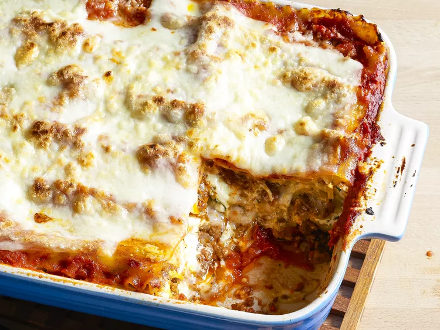

Lasagna Recepie
Lasagna is a classic Italian dish made with layers of pasta, meat, cheese, and sauce. It's a hearty and comforting meal that's perfect for family gatherings or special occasions.

Ingredients
- Meat: this super meaty lasagna has sweet Italian sausage and lean ground beef.
- Onion and Garlic: this super meaty lasagna has sweet Italian sausage and lean ground beef.
- Tomato Products: this super meaty lasagna has sweet Italian sausage and lean ground beef.
- Sugar: this super meaty lasagna has sweet Italian sausage and lean ground beef.
- Spices and Seasoning: this super meaty lasagna has sweet Italian sausage and lean ground beef.
- Lasagna Noodles: this super meaty lasagna has sweet Italian sausage and lean ground beef.
- Cheese: this super meaty lasagna has sweet Italian sausage and lean ground beef.
- Eggs: this super meaty lasagna has sweet Italian sausage and lean ground beef.
How to make Lasagna step by step:
- Preheat the oven to 375°F (190°C).
- In a large skillet, cook the sausage and ground beef over medium heat until browned.
- Add the onion and garlic, cooking until softened.
- Stir in the tomato products, sugar, and spices. Simmer for 30 minutes.
- Cook the lasagna noodles according to package instructions.
- In a bowl, mix together the ricotta cheese, egg, and some of the mozzarella cheese.
- Layer the ingredients in a baking dish: meat sauce, noodles, cheese mixture, and repeat.
- Top with remaining mozzarella cheese.
- Bake for 45 minutes or until bubbly and golden brown.
- Let it cool for 15 minutes before serving.